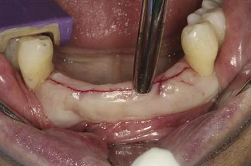
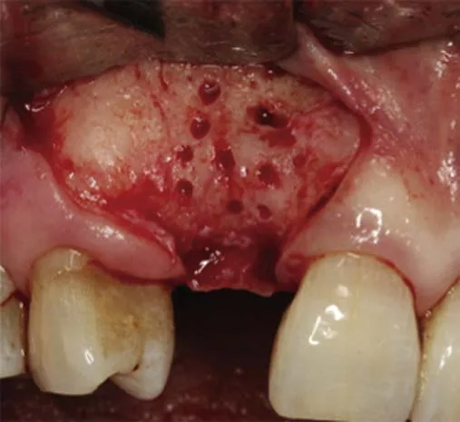

نسخه استخراجشده؛ ترجمه یا تأیید علمی انجام نشده است. وضعیت: captured
یک جمله کل این درس را جمع میکند: «یک مورد موفق با برش شروع میشود» — و بعد با بازتاب درست فلپ همراه با پریوست سالم، جایگذاری درست ممبران، و بستهشدن بدون کشش ادامه مییابد.
قاعدهی اول: بافت کراتینیزه مسیر برش را دیکته میکند. پیش از هر برشی باید بافت کراتینیزهی موجود را بررسی کنی. اگر بافت چسبنده کافی نیست، برش را به سمت لینگوال نوار باقیمانده ببر تا بیشترین بافت چسبنده در سمت فاسیال حفظ شود.
قاعدهی دوم: لبههای فلپ باید روی استخوان میزبان بنشینند، نه روی ذرات پیوند و ممبران. این تنها یک ترجیح نیست؛ خط برشی که روی تودهی گرافت بیفتد، در صورت باز شدن، مستقیماً گرافت را در معرض میکروفلور دهان میگذارد.
قاعدهی سوم: برش رهاساز باید پایهی پهن داشته باشد. برش با پایهی پهن خونرسانی فلپ را حفظ میکند و اجازه میدهد فلپ بدون کشش بالا برود، کنار زده شود، بازگردانده و بخیه شود. رهاسازیهای عمودی را از پرمخاطرهترین ناحیهی گرافت دور کن.
و چند نکتهی آناتومیک که خطا در آنها گران است:
• برش در خلف مندیبل باید همیشه لترال به رتروملار پد باشد تا عصب لینگوال آسیب نبیند.
• اگر کنار محل گرافت پاپیلای سالمی هست، برش را طوری طراحی کن که وارد آن پاپیلا نشود یا آن را به فضای بیندندانی مجاور منتقل کن.
• بافت لینگوال مندیبل بهنازکی کاغذ است؛ تلاش برای رهاسازی و کشش آن خطر دکمهایشدن (button-hole) و درگیری عروق، اجزای بزاقی و اتصالات عضلانی دارد. اگر پاره شد، میتوان با بخیهی کرومیک ۵-۰ لبهها را نزدیک کرد و کشش را از محل ضعیف برداشت.
• بافت کام بسیار ضخیم و متراکم است و عملاً کشیده نمیشود — انتظار نداشته باش کام حرکت کند.

پیش از هر چیز، بازتاب فلپ (گام ۲ از نُه گام پروتکل GBR): فلپ باید تمامضخامت، یکپارچه و بدون وقفه بلند شود و موکوز سطحی، سابموکوز و پریوست را با هم از استخوان جدا کند. بازتاب نیمهضخامت فلپ را پارهپاره میکند و به پریوست، منبع اصلی خونرسانی استخوان زیرین، آسیب میزند. هنگام استفاده از الواتور پریوستیال (مثلاً Molt 2-4)، لبه همیشه باید روی استخوان بنشیند، وگرنه از فلپ عبور میکند و آن را پاره میکند.
بعد سه گام پیش از گذاشتن هر ذرهای از پیوند، و همهشان با یک منطق:
گام ۳ — برداشتن کامل بافت نرم باقیمانده. این کار الزامی است، چون بقایای بافت نرم از استخوانسازی جلوگیری میکنند. و نکتهی ظریف: این بقایا دقیقاً همان بافتی هستند که ممبران قرار است از محل دور نگه دارد — اگر آن را داخل بگذاری، سدّ زیستی را از درون دور زدهای.
هنگام بازتاب بافت، سطح استخوان را با کورت یا الواتور پریوستیال با حرکت رفتوبرگشتی جانبی «بتراش».
گام ۴ — دکورتیکاسیون. محل گیرنده باید دکورتیکه شود تا خونریزی افزایش یابد (آنژیوژنز) و فاکتورهای رشد استخوانی وارد ناحیه شوند. معیار کفایت ساده و بینایی است: خونریزی باید از محلهای دکورتیکاسیون دیده شود؛ عمق باید آنقدر باشد که خونریزی شروع شود.
گام ۵ — رهاسازی بافت. این کار باید پیش از گذاشتن پیوند انجام شود تا ماده جابهجا نشود. دو نکته:
• سطح داخلی فلپ را پریوست پوشانده است؛ لایهای نازک، متراکم و بدون الیاف الاستیک که کشیده نمیشود. رهاسازی با یک برش سطحی و پیوسته در پریوست انجام میشود تا بافت کشسان زیر آن آزاد شود.
• پس از دیسکسیون بلانت با قیچی — قیچی موازی با فلپ — فلپ باید آزادانه روی محل گرافت کشیده شود.
معیار عددی موفقیت رهاسازی: فلپ فاسیال باید دستکم ۵ میلیمتر فراتر از لبهی فلپ لینگوال کشیده شود. تا وقتی این حد به دست نیامده، رهاسازی تمام نشده است.
در بستهشدن: اول خط کرست با بخیهی بدون کشش بسته میشود. بخیههای تشکی باید در فواصلی گذاشته شوند که فشار روی خط برش را در سطح وسیعی توزیع کنند، و نباید کشش زیادی روی فلپهای رهاساز بیاید. نخهای پیشنهادی ویکریل یا PTFE (سایتوپلاست) هستند تا درمانگر بتواند زمان کشیدن بخیه را خودش انتخاب کند.
